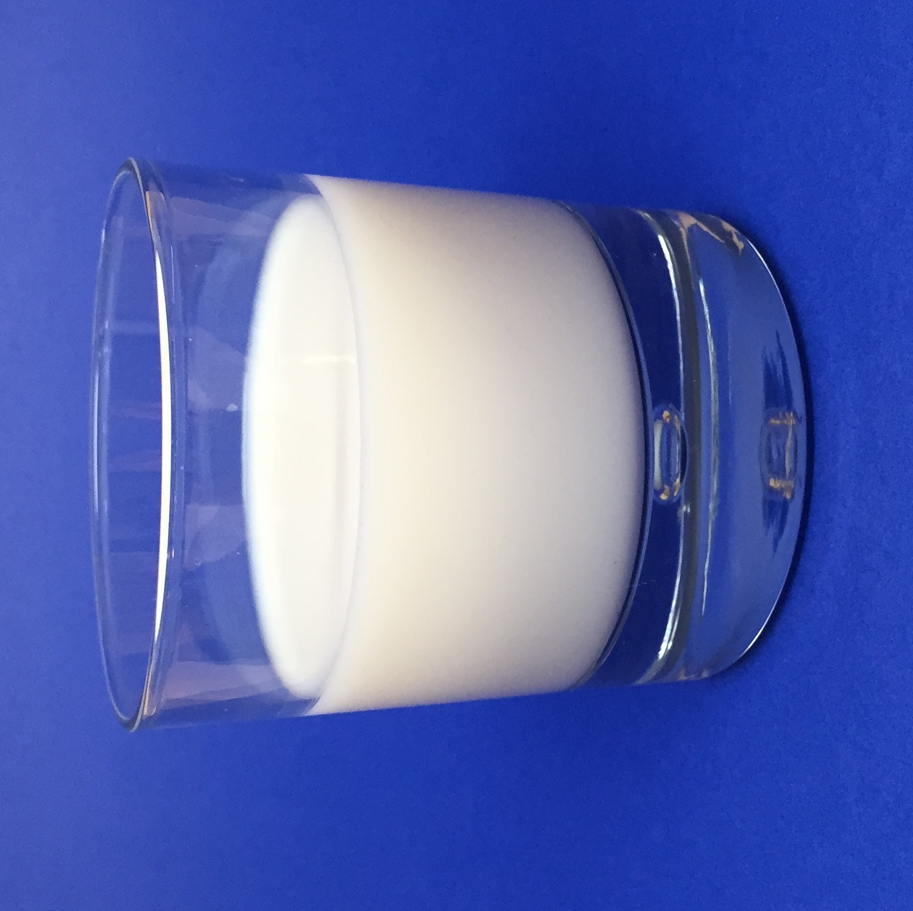
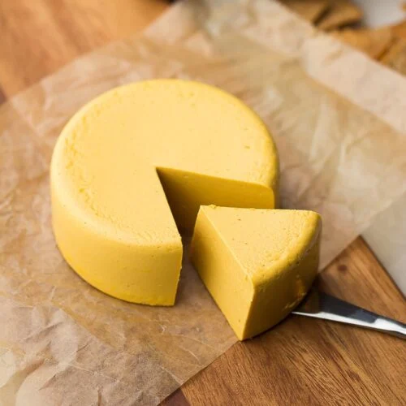

Milk is a white liquid food produced by the mammary glands of mammals. It is the primary source of nutrition for young mammals (including breastfed human... infants) before they are able to digest solid food. Milk contains many nutrients, including calcium and protein, as well as lactose and saturated fat. Immune factors and immune-modulating components in milk contribute to milk immunity.

Cheese
Cheese is a type of dairy product produced in a range of flavors, textures, and forms by coagulation of the milk protein casein. It comprises proteins and...fat from milk (usually the milk of cows, buffalo, goats or sheep). During production, milk is usually acidified and either the enzymes of rennet or bacterial enzymes with similar activity are added to cause the casein to coagulate. The solid curds are then separated from the liquid whey and pressed into finished cheese.

Cream
Cream is a dairy product composed of the higher-fat layer skimmed from the top of milk before homogenization. In un-homogenized milk, the fat, which is less... dense, eventually rises to the top. In the industrial production of cream, this process is accelerated by using centrifuges called "separators". In many countries, it is sold in several grades depending on the total butterfat content. It can be dried to a powder for shipment to distant markets, and contains high levels of saturated fat.